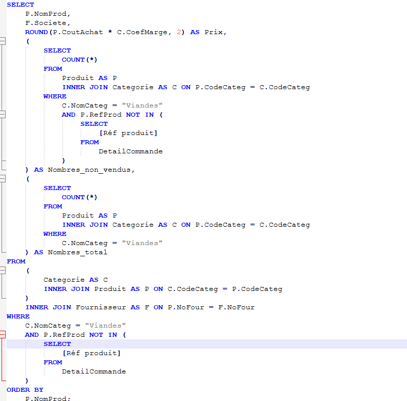
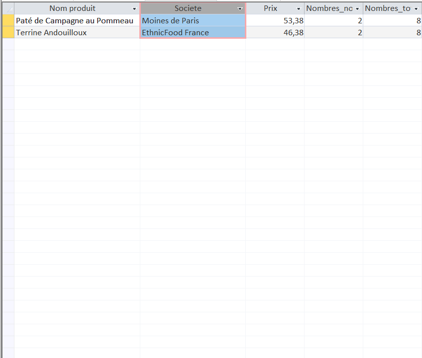

Dans une réflexion en lien avec l’offre commerciale : Calcul de l’indicateur nombre de produits carnés non commandés actuellement ?


L'intérêt de voir si actuellement, il y a des viandes qui n'ont jamais été vendus, c'est de voir en un premier temps les produits qui ne marchent pas et ainsi donc de voir les produits où il faudrait baisser le prix ou renégocier avec le fournisseur.
La requête affiche le nombre de produits carnés jamais vendus par rapport au nombre total de produits carnés au catalogue, pour savoir si la viande se vend. Elle liste aussi les produits concernés, avec leur fournisseur et leur prix de vente, afin de décider de baisser les prix ou d’arrêter de s’approvisionner chez eux.